Remettre à sa place, sur le territoire d'aujourd'hui, la carte parcelle par parcelle de 1730.
Pour répartir l'impôt plus justement, le roi de Sardaigne fait mesurer chaque parcelle du duché de Savoie. Le résultat : une carte de chaque paroisse, à grande échelle, dessinée sur le terrain.
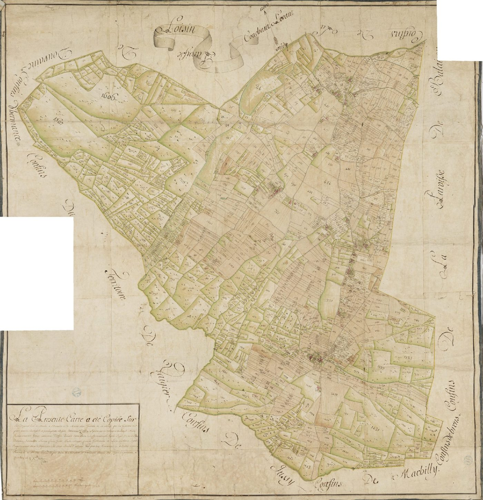
Mappe de Loisin, Haute-Savoie
La plus grande partie du corpus, avec ses numérisations en ligne.
Les communes devenues genevoises, rattachées en 1816.
Plusieurs exemplaires d'une même mappe, de qualité et d'état différents.
Une image numérisée se consulte, mais elle ne se superpose à rien : ni au cadastre actuel, ni à la mappe voisine.
Un travail de vectorisation des parcelles déjà entamé par Dominique Barbero.
Ce qui manque : une carte continue, d'une paroisse à l'autre, avec la même méthode partout.
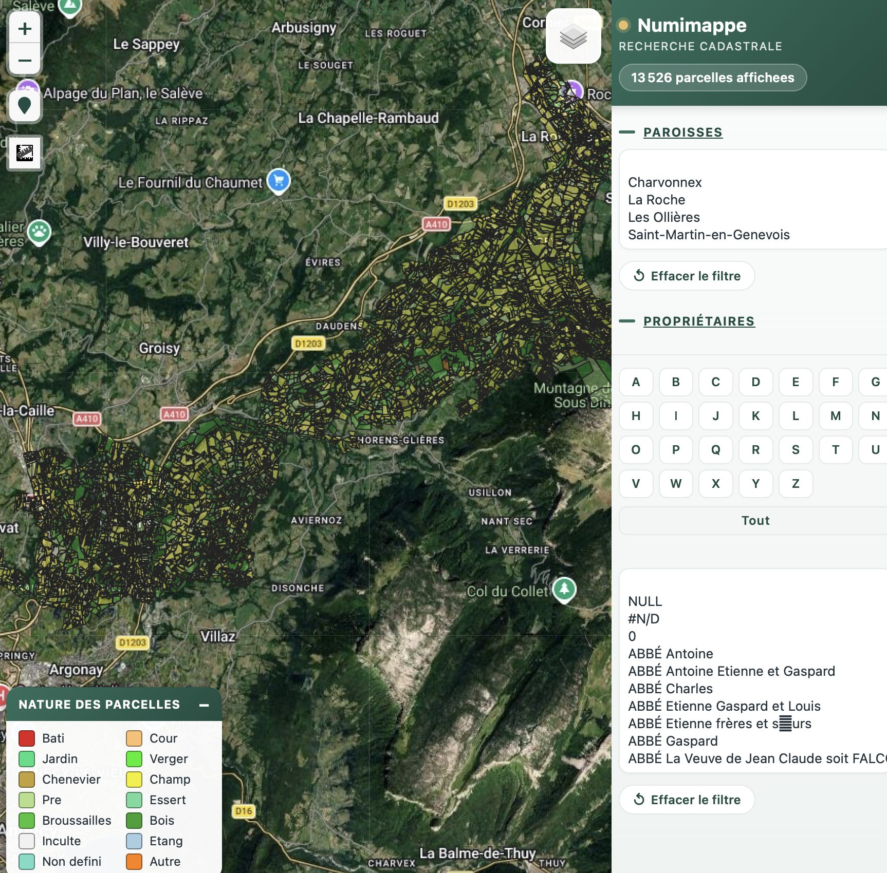
La mappe sarde digitalisée du Pays de Fillière : parcelles, nature et propriétaires.
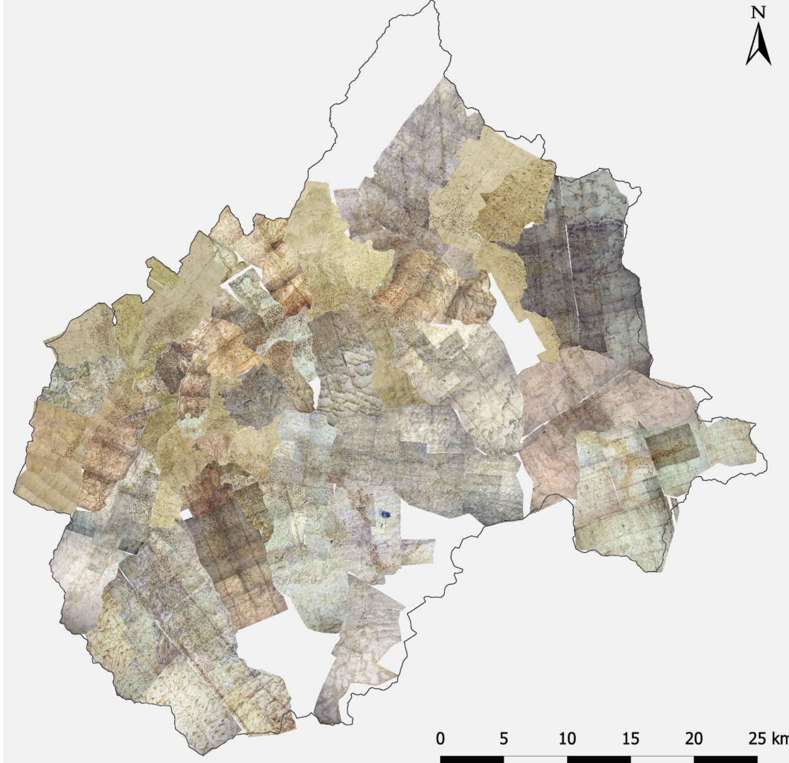
Archéogéographie de la Tarentaise (Paris 1, depuis 2021). Mappes géoréférencées à l'échelle de la vallée. Mappes © ADS73.
Sur le cadastre napoléonien de la Vendée, chaque acteur a pris une étape. Le résultat : un géoportail où l'on interroge chaque parcelle du début du XIXe siècle.
1 958 km² · 26 613 points de calage posés à la main
Haute-Savoie : 310 copies de mappes aux Archives départementales, une par paroisse (originales en doublon non comptées). Genève : mappes des Archives d'État de Genève.
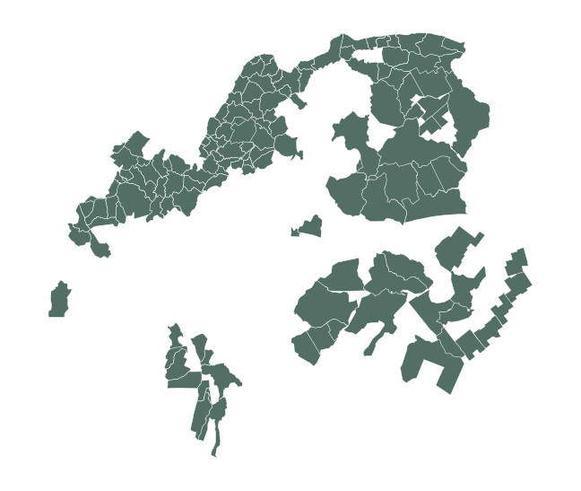
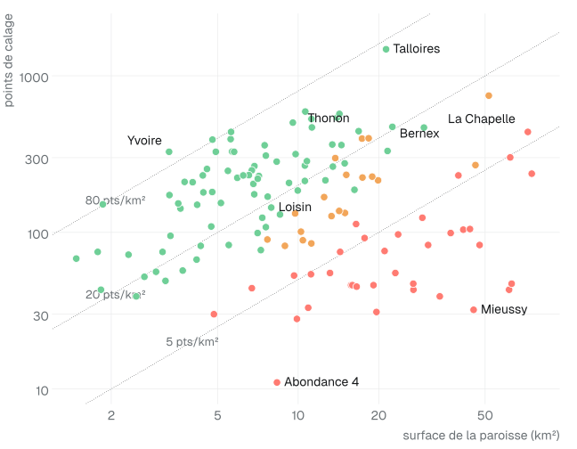
Chaque point est une mappe : surface et nombre de points de calage (échelles logarithmiques). Couleur : indice de précision. Densités médianes de points par classe.
Le travail se fait dans QGIS, logiciel libre de cartographie. La chaîne est automatisée : une fois les points posés, une mappe est traitée en quelques minutes.
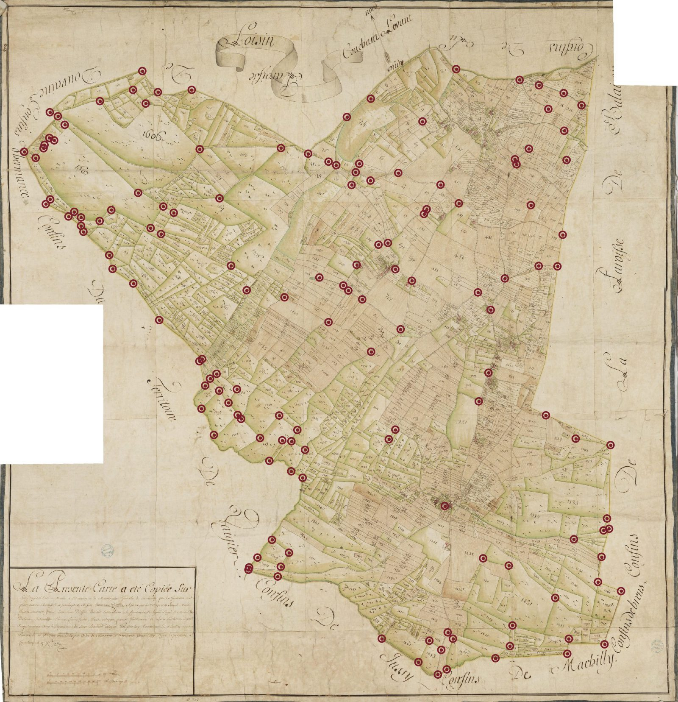
Un angle d'église, un carrefour, un pont, une limite qui n'a pas bougé : chaque point relie un pixel de la mappe à une coordonnée actuelle.
Les points sont posés sur une image allégée, plus maniable. Un outil compare ensuite cette image à la version haute définition, fenêtre par fenêtre, et y reporte chaque point automatiquement.
Les points en désaccord avec leurs voisins sont signalés pour vérification.
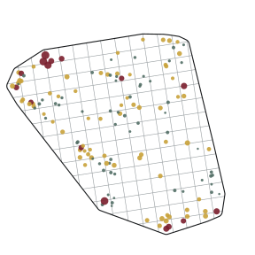
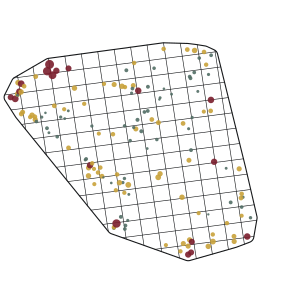
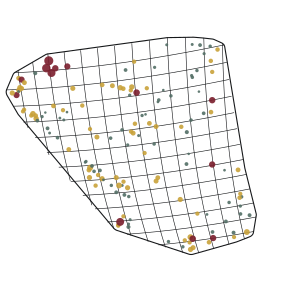
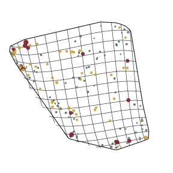
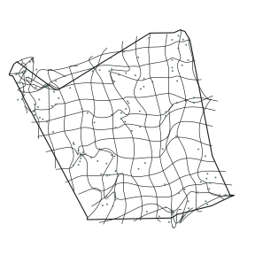
Mappe de Loisin, 144 points. Déformations exagérées 10 fois. Chiffre : écart médian aux points. La sixième, l'hybride, est détaillée plus loin.
Une transformation trop souple suit chaque point, y compris les erreurs : un clic imprécis, une maison mal placée en 1730. Elle donne l'illusion d'un calage parfait.
Le polynôme d'ordre 3 corrige les déformations d'ensemble (papier, assemblage des feuilles) et laisse voir les écarts qui restent.
Transformation retenue, par mappe traitée
À Thonon, le bourg ancien est dessiné plus librement que la campagne. On lui applique une déformation locale, raccordée au reste par une transition de 150 m.
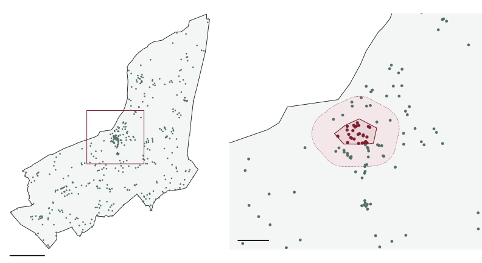
Déformée selon ses points, la mappe est ensuite découpée suivant la limite de la paroisse : sans marges, sans cartouche, prête à rejoindre ses voisines.
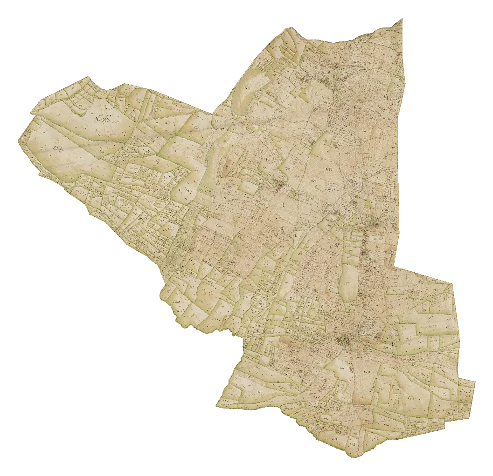
Chaque mappe a son papier et son vieillissement. Les teintes sont rapprochées pour une lecture continue.
Là où deux mappes se chevauchent, un ordre de priorité décide laquelle passe devant.
Les grandes paroisses de montagne (Chamonix, Passy, Samoëns) sont dessinées en plusieurs feuilles, calées une à une.
Une mappe calée a toujours l'air juste. Deux mesures disent où elle l'est vraiment : l'écart et l'indice de précision.
Pour chaque point, on recale la mappe sans lui, puis on mesure l'écart entre la position prédite et la position réelle. Le calage ne peut pas tricher avec ses propres points.
Flèches × 15. Échelle : 1 km.
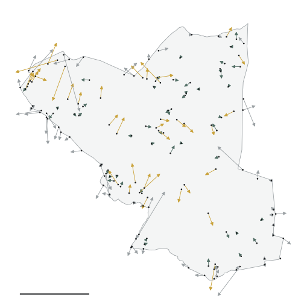
Autour de chaque point, un cercle de 300 m. Au-delà, le calage est extrapolé.
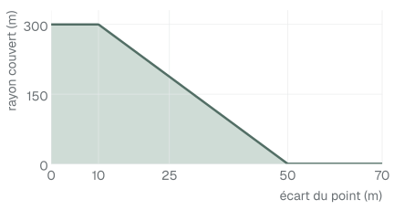
Les points posés sur la limite comptent sans pénalité.
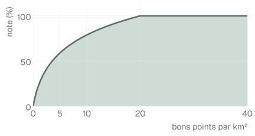
Bons points par km², note pleine à partir de 20.
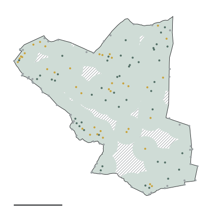
7,9 km² · 144 points
18 bons points au km²
couverture de qualité 91 %
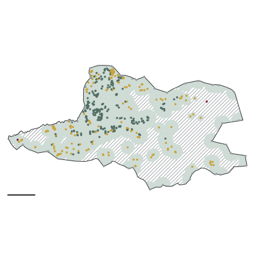
22,5 km² · 472 points
21 bons points au km²
couverture de qualité 65 %
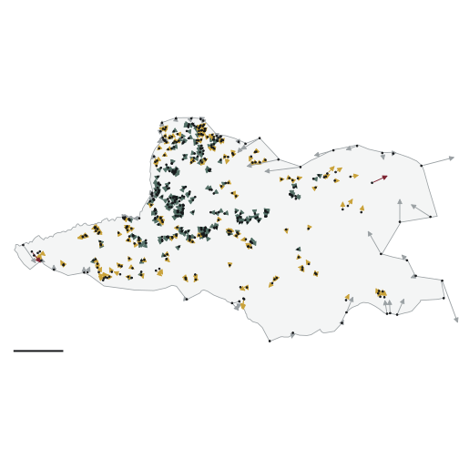
Bernex, 472 points. Flèches × 6. Écart médian à l'intérieur de la paroisse : 8,6 m.
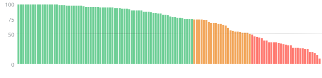
Indice médian : 82 %
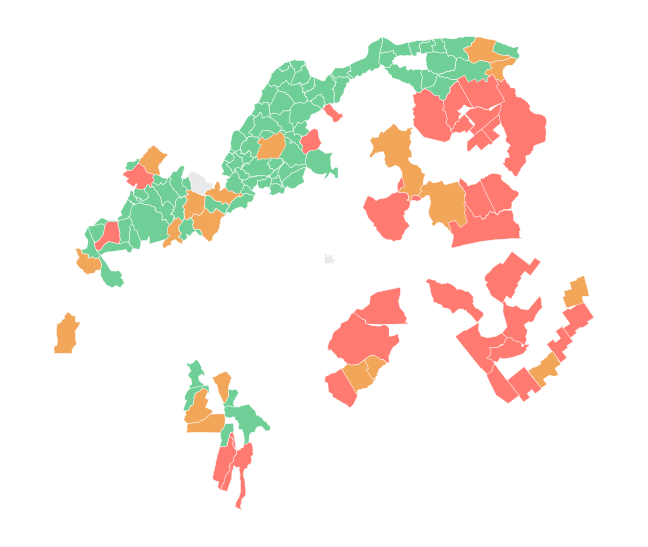
Entrer dans les fonds par le territoire : chaque paroisse renvoie à sa cote et à sa numérisation.
Patrimoine, urbanisme, médiation : comprendre ce qui a façonné un village, un chemin, une limite.
Comparer les paysages, mesurer leur évolution, et croiser avec d'autres sources.
Un extrait imprimable, à l'échelle choisie.
La mappe drapée sur le relief, à imprimer ou à partager.
Le relief en couches, la mappe gravée dessus.
Un survol du territoire de 1730.
Les paroisses manquantes, dont plusieurs grandes paroisses de montagne en plusieurs feuilles.
Ajouter des points là où l'indice est bas, avec l'aide de connaisseurs du terrain.
Cotes, liens vers les numérisations, géomètres et estimateurs de chaque mappe.
Dans l'esprit de Time Machine (Frédéric Kaplan et Isabella di Lenardo, EPFL) : une seule plateforme où les sources historiques se répondent, parce qu'elles sont toutes rattachées au même sol.
Cartes, plans, cadastres, photographies, textes : des médias de toutes époques, calés sur le territoire.
Des outils d'analyse urbaine : comparer les états, mesurer les permanences et les ruptures.
Plans, maquettes, vues et vidéos pour partager un projet avec les élus et les habitants.
Images haute définition, cotes, et un lien de chaque paroisse vers ses fonds.
Soutenir la suite : compléter le territoire et ouvrir l'outil aux usages locaux.
Vectoriser les parcelles, saisir les livres, renforcer les mappes de montagne.